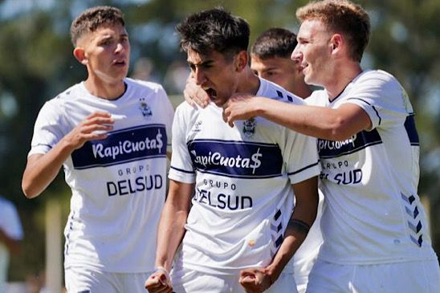

La reserva tripera goleo al guapo
La Reserva del Lobo venció 5-0 a Barracas Central por la Fecha 22 de la Liga. Alan Lescano (2), Nacho Miramón, Ivo Mammini y Agustín Riggio fueron los goleadores en Estancia Chica. Gimnasia disputó el encuentro correspondiente a la Fecha 22 de la Liga Profesional de Reserva, donde se midió frente a Barracas Central como local en Estancia Chica. El elenco Tripero terminó derrotando 5-0 al elenco de Barracas, para sumar su segunda goleada consecutiva como local en el torneo.
En el primer tiempo, el partido estuvo marcado por el dominio del Lobo con las mayores ocasiones de poder anotar el primer gol del juego. Tras los primeros minutos, con un par de jugadas de peligro, el Mens sana empezó a dominar al Guapo y a los 23 minutos abrió el marcador con el tanto de Alan Lescano que culminó una gran presión del ataque local sobre la defensa visitante.
Tras la ventaja inicial, el Tripero siguió siendo dominador de las acciones y a los 42, nuevamente Lescano marcó el 2-0 con un hermoso tiro libre desde el borde del área con un zurdazo que se metió en el ángulo izquierdo del arco de Luca Faunele.
En el segundo tiempo, Gimnasia salió decidido a buscar más ventaja en el resultado y rápidamente la encontró con un remate desde afuera del área de Ignacio Miramón. El jugador, que fue la figura del cotejo, volvió a ser titular en el selectivo y demostró que está haciendo muy bien las cosas para ser considerado para próximas convocatorias de Primera División.
Tras el 3-0, el partido no varió en su desarrollo, donde los comandados por Sebastián Romero lograron dominar a Barracas Central en todo el campo y a los 14 anotó el 4-0 con una gran corrida del goleador del equipo Ivo Mammini, que llegó a 10 tantos en el certamen.
Ya en el epílogo del juego, el Lobo decoró el resultado con una gran maniobra colectiva por la banda derecha, que terminó con el remate al ras del suelo de Agustín Riggio y así logró el 5-0 en la cancha número 1 de Estancia Chica que le permite seguir en el lote de punta del campeonato de Reserva.
Con esta victoria, Gimnasia acumula 36 unidades y ahora visitará a Boca el próximo miércoles desde las 10 en Ezeiza, intentando derrotar al Xeneize para seguir con chances de ganar el certamen.